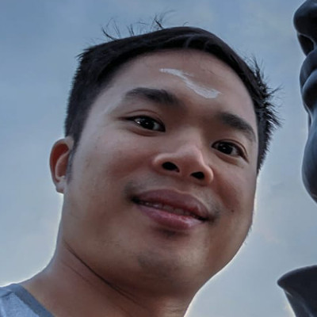

I had an incredible time with everyone there and felt I learned so much about myself and the others around me.
Chris Taufatofua, Lawyer, England/Tonga

Highly recommend if you are interested to access your Akashic Records, to learn to talk to your higher self, to understand yourself, to discover your fear or to heal yourself...
I came without knowing what to expect, I left with a powerful tool to guide my life.
Noel is a caring and gentle teacher. And food is to die for. A very refreshing, empowering retreat. I just hope that it can be longer. =D
I came without knowing what to expect, I left with a powerful tool to guide my life.
Noel is a caring and gentle teacher. And food is to die for. A very refreshing, empowering retreat. I just hope that it can be longer. =D
Jessie Tong, Spiritual Seeker, Malaysia/Singapore

It was by pure chance or destiny that I would have signed up for the retreat. I merely wanted a getaway from the family/kids because I needed a break.
I went in anxious but relaxed after the first night. Once lessons started, I felt right at ease like I was meant to be there. I did not expect to learn about spirituality but was merely curious to see what my Akashic Records might be like, and if following the path of being a healer was the path for me.
I got more than I expected, having gained insights from my Akashic Records, and strangely after the retreat, my relationships with my family, especially my mum have vastly improved, simply because of what I learned about our past lives.
I am much lighter now, feeling much closer to my higher self than I have ever been. The retreat made me seek out more spiritual healings & I have since followed the path of spiritual calling to learn more for my healing. Not forgetting the absolutely delicious vegan food we get every meal, I can still remember every mouth especially all the moments during our food meditation lunch!
I miss the retreat & everyone I met there & so so thankful to Noel for taking such good care of us. Mantras have also since become a daily part of my life, I listen & sing with my kids almost every day. It’s simply wonderful!
I went in anxious but relaxed after the first night. Once lessons started, I felt right at ease like I was meant to be there. I did not expect to learn about spirituality but was merely curious to see what my Akashic Records might be like, and if following the path of being a healer was the path for me.
I got more than I expected, having gained insights from my Akashic Records, and strangely after the retreat, my relationships with my family, especially my mum have vastly improved, simply because of what I learned about our past lives.
I am much lighter now, feeling much closer to my higher self than I have ever been. The retreat made me seek out more spiritual healings & I have since followed the path of spiritual calling to learn more for my healing. Not forgetting the absolutely delicious vegan food we get every meal, I can still remember every mouth especially all the moments during our food meditation lunch!
I miss the retreat & everyone I met there & so so thankful to Noel for taking such good care of us. Mantras have also since become a daily part of my life, I listen & sing with my kids almost every day. It’s simply wonderful!
Joey Lam, Mama Needs A Retreat, Singapore

What really matters in life? Is it your health, wealth or something else?
Regardless of your answer now, it's great to know that this is not a "single player game" and that there are guides, love ones, etc always looking out for you as you navigate your life's path.
Regardless of your answer now, it's great to know that this is not a "single player game" and that there are guides, love ones, etc always looking out for you as you navigate your life's path.
Kelly Choo, The Entity Known As Kelly Choo, Singapore

The immersion is the one thing you were missing but did not know about. It brought me joy and light and made me reflect on the everyday things I usually brush aside.
Totally enlightening and worth your time! Remember you are on this journey and rediscovering yourself for yourself is worth more than anything else
Totally enlightening and worth your time! Remember you are on this journey and rediscovering yourself for yourself is worth more than anything else
Nathalia Grisard, Life Adventurer, Brazil/England

The biggest outcome I have gotten from the programme was the importance of being myself. Knowing who I am at that moment, being able to express it with honesty and seeing the possibilities of changing to be a better me, and of course, with choice.
Noel has opened myself to be able to see this better for myself and the people around me. Thank you, Noel!
Noel has opened myself to be able to see this better for myself and the people around me. Thank you, Noel!